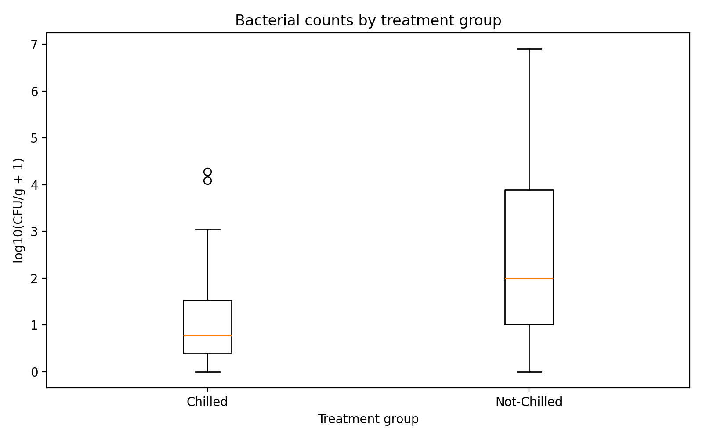
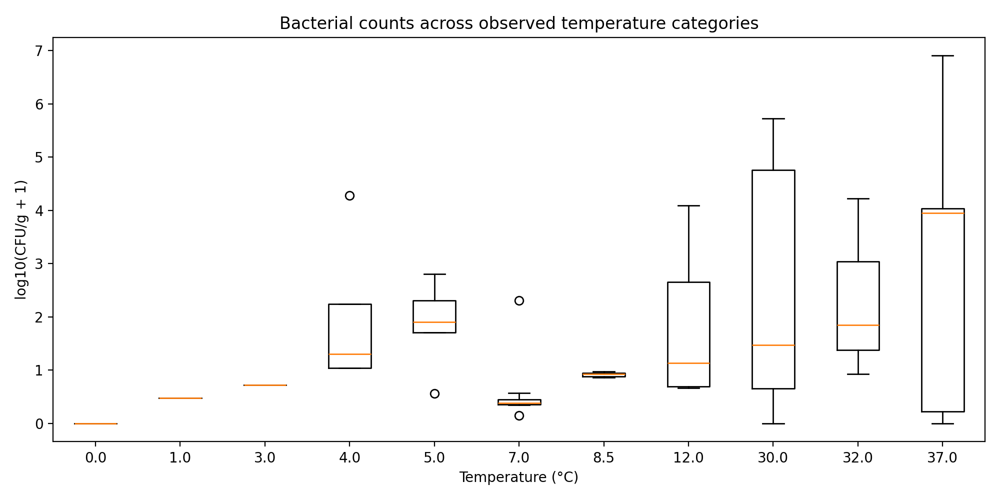

R & Statistical Research
Selected statistical analysis and research projects using R, including exploratory data analysis, hypothesis testing, data visualization, and applied research. Each case study describes the research question, analytical approach, reported results, and limitations.
These projects apply statistical methods to questions in food microbiology, public health, and climate-related research.
Food Bacteria Statistical Analysis
Tools: R, dplyr, ggplot2, descriptive statistics, and non-parametric hypothesis testing.
This analysis examines bacterial counts, measured as colony-forming units per gram (CFU/g), in chilled and non-chilled food samples. The objective is to describe the observed distributions and investigate differences between treatment groups and temperature categories.
Research Questions
- How do bacterial counts differ between chilled and non-chilled samples?
- Are the bacterial count distributions consistent with normality?
- Do observed counts differ across temperature categories?
Sample Overview
The supplied analysis included 96 food samples: 35 chilled samples and 61 non-chilled samples.
| Measure | Chilled | Non-chilled |
|---|---|---|
| Number of samples | 35 | 61 |
| Mean CFU/g | 966 | 173,137 |
| Median CFU/g | 5 | 98 |
| Minimum CFU/g | 0 | 0 |
| Maximum CFU/g | 19,000 | 8,000,000 |
In the supplied report, non-chilled samples had a higher mean and median bacterial count and a wider observed range. Both distributions were strongly right-skewed, with a small number of high counts affecting the results.
Visual Results
The following figures compare bacterial count distributions between food storage groups and across temperature categories.
Figure 1. Chilled vs. Non-chilled Samples

This boxplot compares bacterial counts in chilled and non-chilled samples. Extreme values may compress the boxes and make differences among lower counts difficult to see.
Figure 2. Bacterial Counts by Temperature Category

This figure compares observed bacterial counts across temperature categories. Differences should be interpreted cautiously because temperature and treatment group may be related.
Statistical Methods
- Descriptive statistics: sample size, mean, standard deviation, median, interquartile range, minimum, maximum, skewness, and kurtosis.
- Shapiro-Wilk test: assessment of normality within treatment groups.
- Wilcoxon rank-sum test: comparison of bacterial count distributions between chilled and non-chilled samples.
- Kruskal-Wallis and post-hoc tests: assessment of differences among temperature categories.
Reported Results
| Analysis | Reported p-value | Interpretation |
|---|---|---|
| Shapiro-Wilk: chilled | 1.47 × 10-13 | Evidence against normality |
| Shapiro-Wilk: non-chilled | 2.20 × 10-16 | Evidence against normality |
| Wilcoxon rank-sum | 3.00 × 10-6 | Reported difference between treatment groups |
| Kruskal-Wallis: temperature groups | 0.0031 | Reported difference among temperature categories |
The supplied report indicates that bacterial counts were generally higher in the non-chilled group and that differences among temperature categories were observed.
Limitations and Interpretation
- The sample may not represent the wider food population, and sample sizes across temperature categories were uneven.
- The supplied report notes that a temperature value was imputed for some chilled vegetables. This should be checked against the final dataset.
- Temperature and treatment group may be related; observed differences do not establish a causal temperature effect.
- Reported statistics should be regenerated from the analysis script and verified before being treated as final results.
Interpretation note: These results describe the supplied sample and should not be interpreted as proof of causation or as representative of all food products.
Dengue and Climate Statistical Research
Focus: Applied statistics, exploratory data analysis, trend assessment, and spatio-temporal analysis.
This research collaboration examined relationships between dengue incidence and climate variables. The work investigated how temperature, rainfall, relative humidity, and heat index may relate to dengue patterns over time.
Research Scope
- Exploratory analysis of dengue incidence and climate variables.
- Correlation analysis to investigate associations.
- Trend assessment and time-series visualization.
- Statistical and spatio-temporal analysis of observed patterns.
Research Context
The work involved a collaboration with the University of the Philippines Manila National Institutes of Health. Additional charts, methods, and findings will be added as the corresponding analysis files and outputs are prepared for publication.
No numerical findings are presented here until the corresponding analysis outputs are ready to be shared.